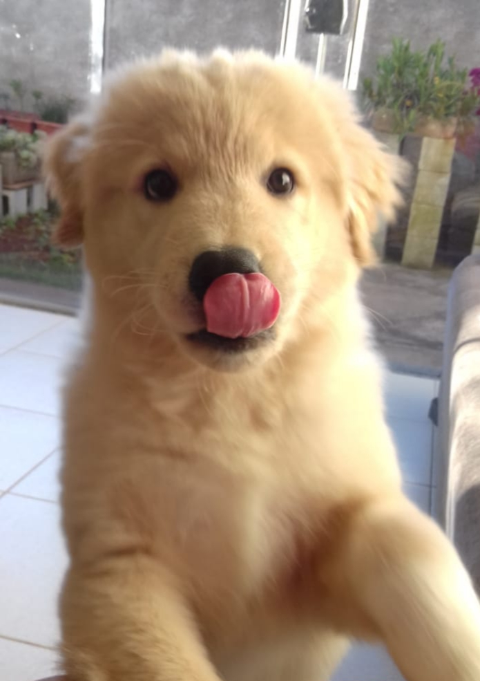

Seja bem vindo(a)!
Sou graduado em Engenharia de Controle e Automação pela UFMG, possuo mestrado em Engenharia elétrica também pela UFMG e atualmente estou cursando uma especialização em Ciência de Dados e BIG Data pela PUC Minas.
Desde minha graduação atuei como docente, em vários níveis de ensino:
- Ensino médio: física
- Preparatório para vestibulares/ENEM: matemática.
- Ensino técnico: técnico em automação industrial e técnico em informática.
- Ensino superior: engenharias elétrica, civil, mecânica e produção e direito.
- Infraestrutura em T.I.
- Programação em sistemas ERP (Ileader).
- Criação de relatórios de diagnósticos para ERP (Crystal Reports).
- Gestão ágil de projetos de tecnologia.
- Análise de dados e obtenção de indicadores.

PS: sim o nome é Ted mesmo ;-)